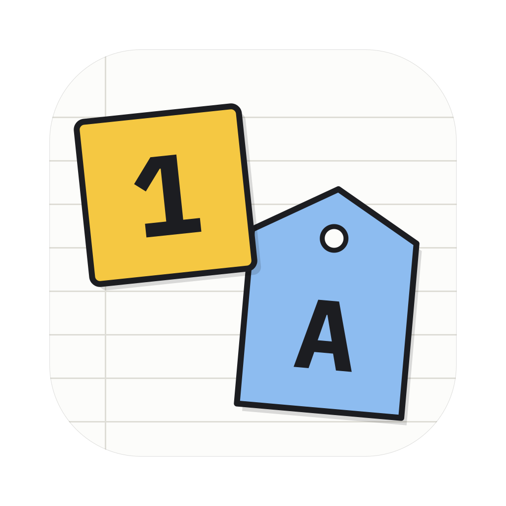
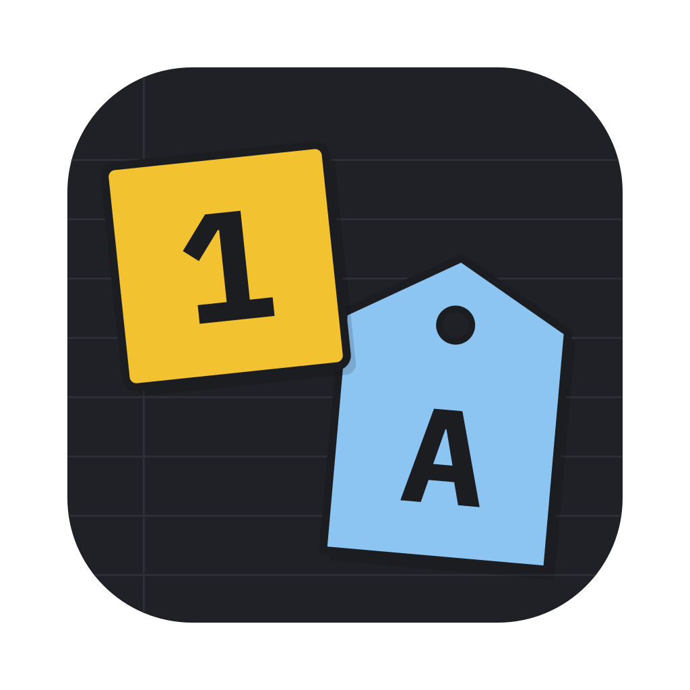

Two stickers on a ruled form: your change, numbered, and the agent’s, lettered on a tag. Flat fills, ink keylines, one small offset shadow. 1024 master on the macOS grid (824 tile, 185.4 corner).

Light, 1024 master shown at 400

Dark appearance128 px64 px32 px16 px128, 64, 32 and 16 px at 1×. At 32 px it still reads as a yellow square and a blue tag.